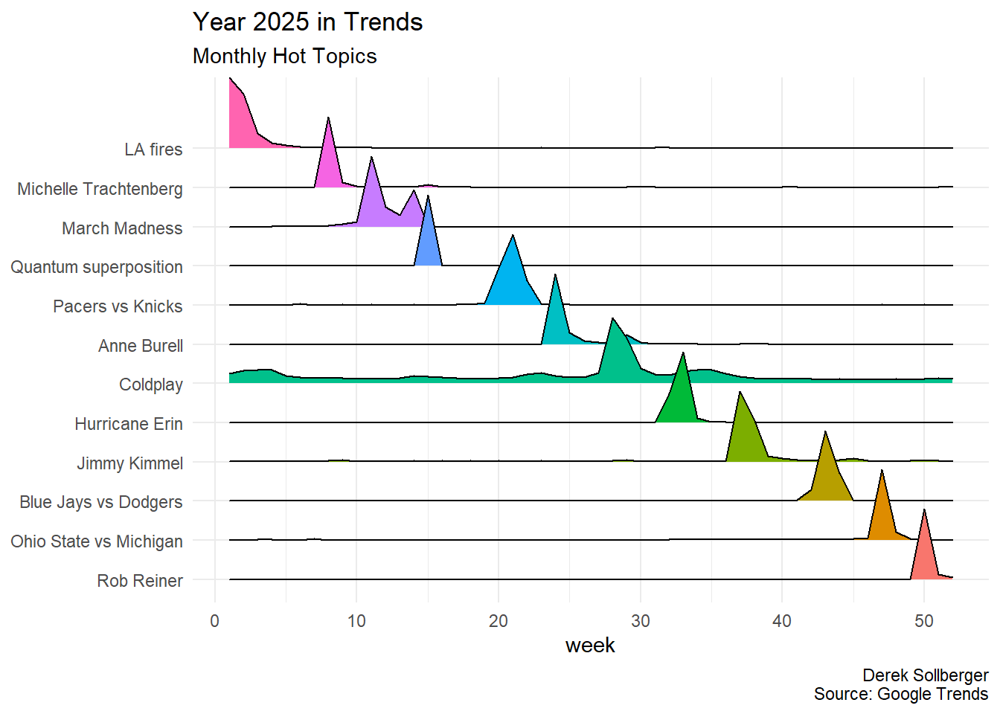

# install.packages("gtrendsR")
library("ggridges")
library("gtrendsR")
library("tidyverse")Goal
I haven’t looked at Google Trends in a while. First, let’s see if the API still works (for R programmers), and then try to replicate Angsar Wolsing’s infographic about what was trending in 2025.
Package
The gtrendsR package was created by Philippe Massicotte
Topics
For lack of a better idea at the moment, we manually check what were the most “rising” topics monthly directly on the Google Trends website, and note them here. That is, I simply changed the window in “Custom Time Range” for a month at a time. (I also took liberties to avoid some politics.)
- LA fires
- Michelle Trachtenberg
- March Madness
- quantum superposition
- Pacers vs Knicks
- Anne Burrell
- Coldplay
- Hurricane Erin
- Jimmy Kimmel
- Blue Jays vs Dodgers
- Ohio State vs Michigan
- Rob Reiner
Extraction
Now, we can use the gtrends function to get the data about each of those topics.
jan_topic <- gtrends("la fires")
feb_topic <- gtrends("michelle trachtenberg")
mar_topic <- gtrends("march madness")
apr_topic <- gtrends("quantum superposition")
may_topic <- gtrends("pacers vs knicks")
jun_topic <- gtrends("anne burrell")
jul_topic <- gtrends("coldplay")
aug_topic <- gtrends("hurricane erin")
sep_topic <- gtrends("jimmy kimmel")
oct_topic <- gtrends("blue jays vs dodgers")
nov_topic <- gtrends("ohio state vs michigan")
dec_topic <- gtrends("rob reiner")This took a couple of minutes, so let’s try not to ask for the scraping again.
df_raw <- rbind(jan_topic$interest_over_time,
feb_topic$interest_over_time,
mar_topic$interest_over_time,
apr_topic$interest_over_time,
may_topic$interest_over_time,
jun_topic$interest_over_time,
jul_topic$interest_over_time,
aug_topic$interest_over_time,
sep_topic$interest_over_time,
oct_topic$interest_over_time,
nov_topic$interest_over_time,
dec_topic$interest_over_time)
saveRDS(df_raw, "df_raw.rds")df_raw <- readRDS("df_raw.rds")Wrangling
I want to focus on the year 2025, and I will eventually use “week number” as the horizontal axis (since it was weekly data).
df <- df_raw |>
separate(date, sep = "-", into = c("year", "month", "day")) |>
filter(year == 2025) |>
select(month, day, hits, keyword)
# arrange(month, day)
df$week <- rep(1:52, 12)The data says “< 1” when virtually no data was collected. Let’s impute that to zero (for numerical calculations).
df$hits[df$hits == "<1"] <- 0
df$hits <- as.numeric(df$hits)Also, we can use a factor variable to put the topics in chronological order (rather than alphabetical order)
df$keyword <- factor(df$keyword,
levels = rev(c("la fires", "michelle trachtenberg",
"march madness", "quantum superposition",
"pacers vs knicks", "anne burrell",
"coldplay", "hurricane erin",
"jimmy kimmel", "blue jays vs dodgers",
"ohio state vs michigan", "rob reiner")))Ridges
df |>
ggplot(aes(x = week, y = keyword,
fill = keyword, height = hits)) +
ggridges::geom_density_ridges(stat = "identity") +
labs(title = "Year 2025 in Trends",
subtitle = "Monthly Hot Topics",
caption = "Derek Sollberger\nSource: Google Trends") +
scale_x_continuous(name = "week", limits = c(1,52)) +
scale_y_discrete(labels = rev(c("LA fires", "Michelle Trachtenberg",
"March Madness", "Quantum superposition",
"Pacers vs Knicks", "Anne Burell",
"Coldplay", "Hurricane Erin",
"Jimmy Kimmel", "Blue Jays vs Dodgers",
"Ohio State vs Michigan", "Rob Reiner"))) +
theme_minimal() +
theme(axis.title.y = element_blank(),
legend.position = "none")
Session Info
sessionInfo()R version 4.5.1 (2025-06-13 ucrt)
Platform: x86_64-w64-mingw32/x64
Running under: Windows 10 x64 (build 19045)
Matrix products: default
LAPACK version 3.12.1
locale:
[1] LC_COLLATE=English_United States.utf8
[2] LC_CTYPE=English_United States.utf8
[3] LC_MONETARY=English_United States.utf8
[4] LC_NUMERIC=C
[5] LC_TIME=English_United States.utf8
time zone: America/New_York
tzcode source: internal
attached base packages:
[1] stats graphics grDevices utils datasets methods base
other attached packages:
[1] lubridate_1.9.4 forcats_1.0.0 stringr_1.5.1 dplyr_1.1.4
[5] purrr_1.1.0 readr_2.1.5 tidyr_1.3.1 tibble_3.3.0
[9] ggplot2_4.0.0 tidyverse_2.0.0 gtrendsR_1.5.2 ggridges_0.5.6
loaded via a namespace (and not attached):
[1] gtable_0.3.6 jsonlite_2.0.0 compiler_4.5.1 tidyselect_1.2.1
[5] scales_1.4.0 yaml_2.3.10 fastmap_1.2.0 R6_2.6.1
[9] labeling_0.4.3 generics_0.1.4 knitr_1.50 htmlwidgets_1.6.4
[13] pillar_1.11.0 RColorBrewer_1.1-3 tzdb_0.5.0 rlang_1.1.6
[17] stringi_1.8.7 xfun_0.52 S7_0.2.0 timechange_0.3.0
[21] cli_3.6.5 withr_3.0.2 magrittr_2.0.3 digest_0.6.37
[25] grid_4.5.1 rstudioapi_0.17.1 hms_1.1.3 lifecycle_1.0.4
[29] vctrs_0.6.5 evaluate_1.0.4 glue_1.8.0 farver_2.1.2
[33] rmarkdown_2.29 tools_4.5.1 pkgconfig_2.0.3 htmltools_0.5.8.1